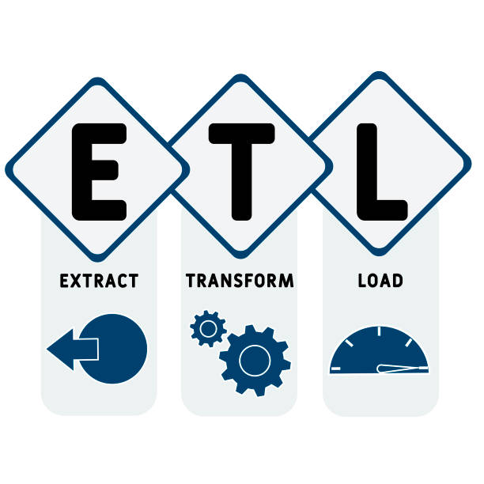
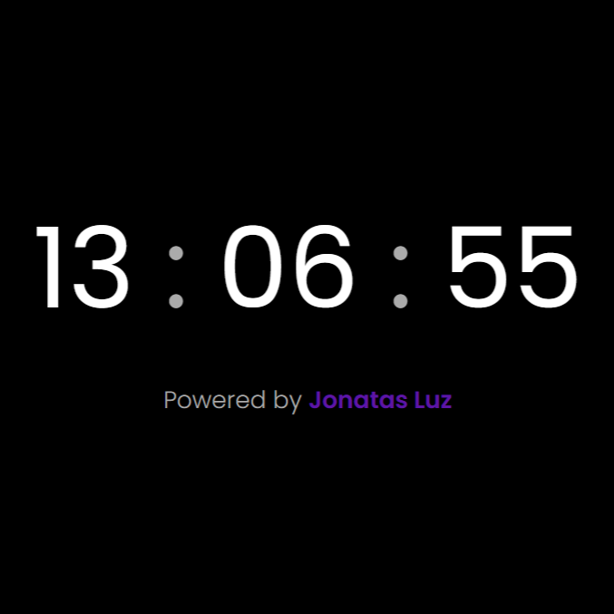

Meus Projetos

ETL com Dados da Netflix
Esse projeto é um script em Python que faz um processo de ETL (Extrair, Transformar e Carregar) com arquivos do Excel contendo dados da Netflix. A ideia é juntar tudo, organizar e gerar um arquivo final limpinho, pronto pra análise.
Ver mais

ETL com API DummyJSON
Este projeto é um exemplo simples de processo ETL (Extract, Transform, Load) utilizando Python. Ele consome dados da API pública DummyJSON, extrai informações dos usuários e salva cada usuário em um arquivo .json individual dentro de uma pasta local.
Ver mais

Relógio Digital
O projeto exibe a hora atual em tempo real, atualizando automaticamente a cada segundo. A interface é simples, moderna e responsiva, ideal para demonstrar conceitos básicos de manipulação do DOM e atualizações dinâmicas com JavaScript.
Ver maisPokédex
Este é um aplicativo para listar Pokémons e adicionar aos favoritos, construído com React no frontend e FastAPI no backend. O objetivo é aprender como integrar uma API externa (PokéAPI) com um banco de dados para salvar dados favoritos de usuários.
Ver mais